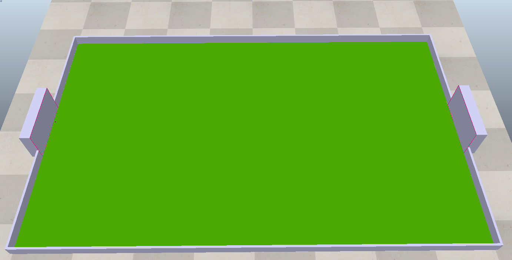
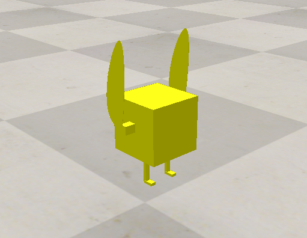

group <<
Previous Next >> Downloads
pj3
工作分配
場景與多輪車零組件設計:41023245 41023248
控制程式設計: 41023237
更新網站:
製作小組報告:
---------------------------------------------------------------
1.場地設計
場地尺寸 : 長 4m x 寬 2.5m
球門尺寸 : 長 0.6m, 高 0.3m, 寬 0.1m
足球規格 : 白色, 直徑 0.1m, 重量 0.5kg

2.玩家設計與組裝

3.輪盤記分板繪製
4.輪盤記分板程式
5.玩家控制程式與設置
# pip install pyzmq cbor keyboard
from zmqRemoteApi_IPv6 import RemoteAPIClient
import keyboard
client = RemoteAPIClient('2001:288:6004:17:2023:cdb:7:7', 23000) 須根據主機位置更改IP
print('Program started')
sim = client.getObject('sim')
# Define the size and position of the cuboid
size = [0.1, 0.2, 0.3]
position = [0, 0, 0.15]
sim.startSimulation()
print('Simulation started')
def setBubbleRobVelocity(leftWheelVelocity, rightWheelVelocity):
leftMotor = sim.getObject('/leftMotor1') 須根據玩家代號更改名稱
rightMotor = sim.getObject('/rightMotor1')
sim.setJointTargetVelocity(leftMotor, leftWheelVelocity)
sim.setJointTargetVelocity(rightMotor, rightWheelVelocity)
'''
# Example usage 1:
setBubbleRobVelocity(1.0, 1.0)
time.sleep(2)
setBubbleRobVelocity(0.0, 0.0)
'''
# use keyborad to move BubbleRob
while True:
if keyboard.is_pressed('up'):
setBubbleRobVelocity(1.0, 1.0)
elif keyboard.is_pressed('down'):
setBubbleRobVelocity(-1.0, -1.0)
elif keyboard.is_pressed('left'):
setBubbleRobVelocity(-1.0, 1.0)
elif keyboard.is_pressed('right'):
setBubbleRobVelocity(1.0, -1.0)
elif keyboard.is_pressed('q'):
# stop simulation
sim.stopSimulation()
else:
setBubbleRobVelocity(0.0, 0.0)
group <<
Previous Next >> Downloads